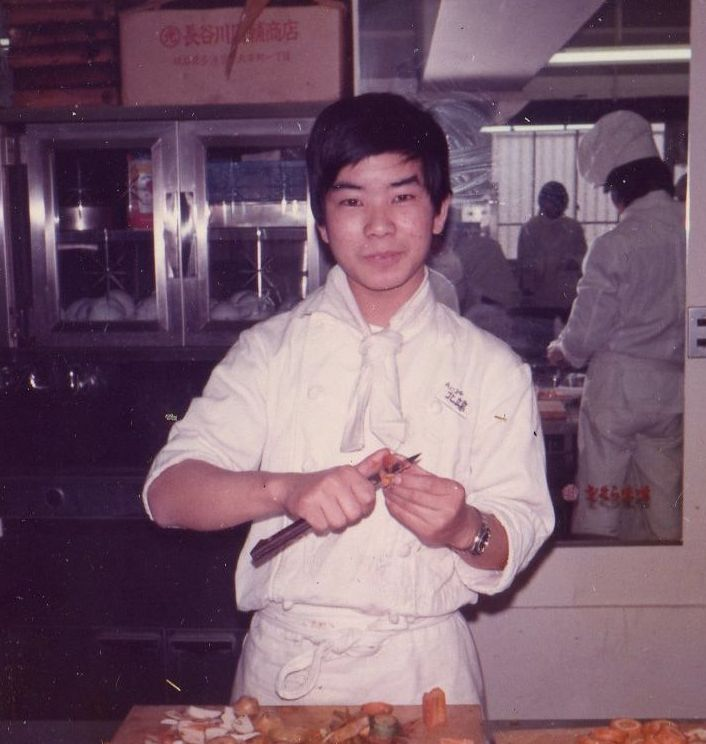

タイムラインで紡ぐ、昭和・平成・令和の軌跡

紀三井寺での原風景、網走の極寒と独学の決意、トラックキャビンでの英語教室、家族の誕生と葛藤、そして89歳まで見据えた盤石な財務防衛まで。映像編集のタイムラインのように、すべてを時系列で俯瞰・編集できる自分史アーカイブ。
この記事を年表から削除してもよろしいですか？
保存したバックアップファイル（.json）を選んで記事を復元します。
ご自身で追加・編集した記事データをパソコンにダウンロード保存します。
記事の追加や復元が終わったら、下のボタンで最新の index.html をダウンロードし、GitHubリポジトリに上書きアップロードすると、公開URLのサイトに完全反映されます。